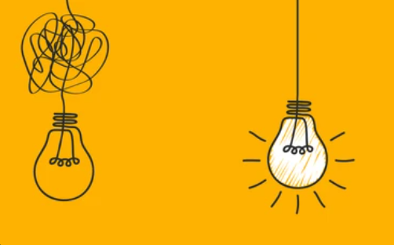
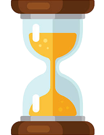

GoalMinder Tips
Having difficulties with setting goals? Here are some strong tips and advice on setting objectives!
-
1. SIMPLE: To make progress and have fun, start with a template you understand. If it's confusing, you won't use it effectively. Keep it simple and clear so you can track your progress easily and make necessary adjustments.

-
2. HAVE A TIMEFRAME: Set a timeframe for your goals to stay focused and determined. Long-term goals are great, but without a deadline, you may lack direction and motivation to achieve them.

-
3. SHOW WHEN YOU ARE WINNING: Celebrate your progress to stay motivated! A goal-setting template should clearly display how far you've come and where you currently stand. Seeing your achievements and getting closer to your destination can be the extra push you need to reach your ultimate goal.
-
4. SHOW YOU WHY YOU ARE DOING WHAT YOU ARE DOING: Keep your motivation high with a goal template that includes space for your why. Knowing the purpose behind your end goal is crucial. It's not just about where you want to be; it's about why you're heading there. Displaying your clear purpose will constantly remind you of the importance of your hard work and the ultimate reward waiting for you at the finish line.
-
5. GIVE YOU SPACE TO SAY WHAT YOU NEED TO DO: Finally, a template should have exactly what you need to do to reach those goals. That way, you can make sure that you follow your instructions and do everything you know that you need to do. You may also need to have space to change things as, along the way, you are likely to see things that are not working out that well for you and the things that are going to work out for you in the future.